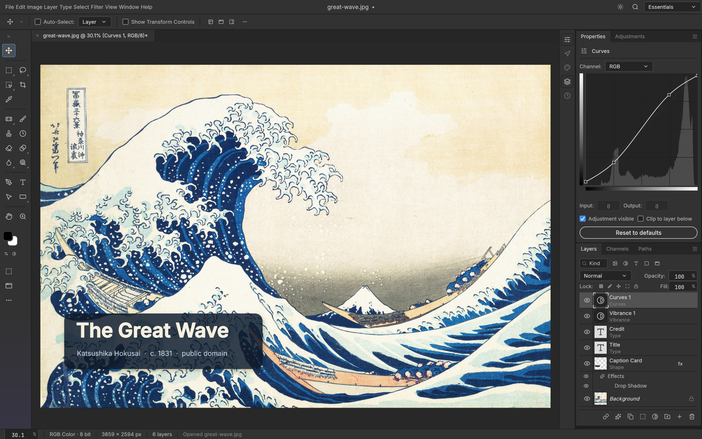
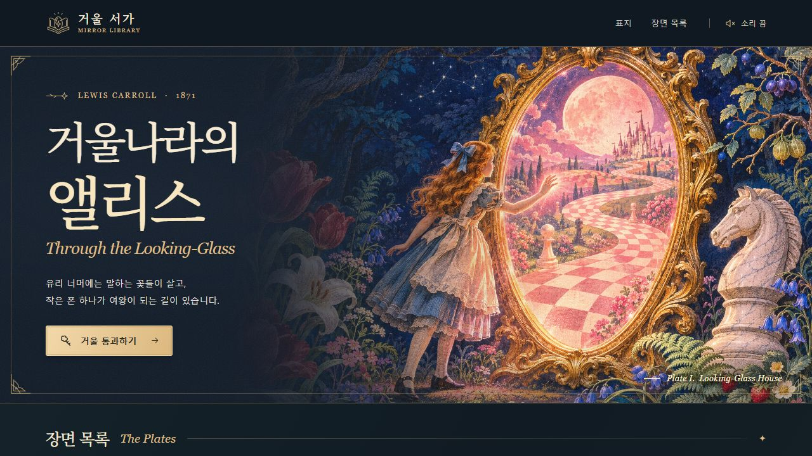
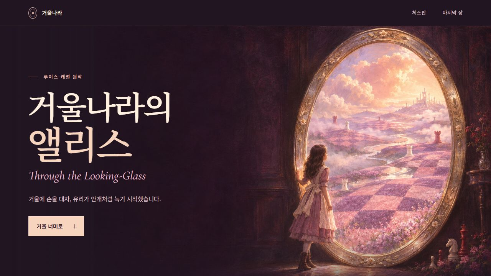

HELLO, HUMAN / LETTER 08
3만 원 이하 텀블러,
AI도 같은 상품을 찾을까요?
검색창에 예산을 넣을 때와 AI에게 말로 부탁할 때, 쇼핑몰은 같은 가격 기준을 쓸까요? 가상 상점의 텀블러 두 개로 확인해봅니다.
안녕하세요, 헬로우 휴먼 멤버 여러분. 여덟 번째 편지입니다.
텀블러를 선물하려고 합니다. 500ml짜리는 2만 9천 원이고, 900ml짜리는 4만 2천 원입니다. “3만 원 안에서 찾아줘”라고 하면 작은 텀블러 하나가 남겠지요. AI가 그 제품을 골랐을 때, 정말 쇼핑몰에 예산을 넣어 검색했는지는 어떻게 알 수 있을까요?
이번 주 가이드에는 그 차이를 들여다볼 수 있는 작은 상점이 있습니다. 검색 버튼이 쓰는 기능을 AI도 호출할 수 있게 열어두었습니다. 어떤 조건을 건넸고 어느 상품이 돌아왔는지 보면, 답이 예상과 다를 때 어디부터 살펴볼지 알 수 있습니다.
11월 17일부터 23일까지 올라온 일반뉴스 7편, 가이드 3편, 사례연구 1편을 모았습니다. 회원 작업물에는 같은 ‘거울나라의 앨리스’를 그림책과 체스판으로 각각 풀어낸 두 페이지가 추가됐습니다.
어디서 시작할지 고민이라면
먼저 읽기 좋은 3편
AI에게 열어주기
AI가 쇼핑몰에 상품명과 최대 가격을 건네면 어떤 답이 돌아올까요? 장바구니를 바꾸거나 결제할 일 없이, 가상 상품 세 개로 첫 검색 도구를 시험해볼 수 있습니다.
WebMCP 가이드 읽기 → 사례연구 10 · 사진 편집 메뉴를명령으로도 쓰려면
PhotoCraft에서는 사람이 메뉴를 눌러도, 에이전트가 편집을 요청해도 같은 명령이 실행됩니다. 편집을 마친 그림이 Photoshop에서 만든 기준 이미지와 맞는지 검사하는 과정까지 따라가 보세요.
ArtCraft 사례연구 읽기 → 뉴스 55 · 코드가 증명한 것은정말 리만 가설일까
수학자와 클로드가 쓴 증명을 받아 든 검증진에게는 두 가지 질문이 있었습니다. 코드에 적힌 명제가 원래 문제와 같은가? 그 명제의 증명을 다른 검증기도 받아들이는가?
증명을 확인한 과정 읽기 →가이드 · 3편
쇼핑몰 검색 도구와 서버 보안 점검
쇼핑몰에 상품 검색 도구를 연결하기 →
WebMCP는 열린 웹페이지가 제공하는 기능을 에이전트가 호출할 수 있게 해줍니다. 상품 검색에서 시작해, 내 주문의 배송 상태를 읽을 때 누구의 주문인지 확인하는 방법과 장바구니를 바꾸기 전 고객에게 보여줄 정보를 살펴봅니다.
NGINX2Root, 패치 뒤 어느 프로세스가 요청을 받을까 →
서비스가 사용하는 NGINX 기능을 보안 공지와 대조하고, 배포판에 맞는 수정본을 고르는 절차를 정리했습니다. 업데이트 뒤에는 고객의 접속을 새 프로세스가 처리하는지 확인하고, 호스트의 Linux 커널도 따로 점검합니다.
Java4Shell, 서비스가 실제로 쓰는 Java 확인하기 →
한 서버에 Java 버전이 여럿이면 셸에서 조회한 버전과 서비스가 쓰는 버전이 다를 수 있습니다. 요청을 처리하는 Java 프로세스에서 버전과 설정을 읽고, 재시작 후 패치나 임시 조치가 적용됐는지 확인하는 방법을 담았습니다.
사례연구 · 1편
편집한 사진을 다시 열면 같은 모습일까요?
ArtCraft, 사람과 에이전트가 함께 쓰는 창작 도구 →
PhotoCraft에서 파일을 저장하고 다시 열면 그림이 똑같아 보여도, 처음 열 때 효과를 잘못 그렸을 수 있습니다. 공개 코드에서 저장 전후의 그림을 비교하는 검사와 Photoshop의 기준 이미지에 맞춰보는 검사를 살펴보고, 개발을 돕는 AutoCraft가 어떤 작업을 사람의 판단에 맡기는지도 짚습니다.

일반뉴스 · 7편
하루 한 편으로 돌아보는 AI뉴스
상담 중 고객이 “잠깐만요”라고 하면 →
사르밤이 공개한 영어 상담에서는 기다리는 게, 힌디어 상담에서는 짧은 대꾸를 듣고 설명을 이어가는 게 적절했습니다. 두 장면과 함께, 개발사들이 모델 훈련을 언제 멈추고 어떤 조건에서 재개할지 미리 합의하자는 OpenAI 수석과학자의 제안을 읽습니다.
클로드와 쓴 리만 가설 증명, 수학자들은 어떻게 확인했나 →
레벤트 알푀게가 클로드와 함께 작성한 증명을 공개했습니다. Lean·Mathlib 커뮤니티는 그 코드가 증명한 명제를 수학 라이브러리에 이미 있던 리만 가설의 정의와 대조했고, 독립 검증기들도 증명을 받아들였다고 밝혔습니다.
구글에 브런치 메뉴를 묻고 식료품 주문까지 →
구글은 미국에서 검색과 Gemini에 Target·Safeway 등 식료품점의 주문·결제를 순차 연결한다고 발표했습니다. 구글이 공개한 화면에서 베이글과 크림치즈가 픽업 장바구니에 담기는 모습을 보고, 쇼핑 도구와 판매자 시스템이 장바구니·결제 정보를 주고받는 공통 규격인 UCP를 살펴봅니다.
Gemini가 견적서를 채우고, 회계 담당자는 Xero 장부를 검토한다 →
미국 영어 환경부터 제공되는 Mac용 Gemini가 허용된 앱에서 견적서에 값을 옮기는 과정을 소개합니다. Xero의 미국 회계 서비스에서는 ChatGPT로 월말 결산 검토를 시작하고, 거래 내역을 고칠 때는 Xero로 돌아갑니다.
주문 완료율이 떨어지면 수정안을 보내는 Stitch Loop →
구글이 대기 신청을 연 Stitch Loop는 서비스 지표와 로그에서 문제를 찾아 GitHub에 코드 수정을 제안합니다. 개발자가 제안을 검토해 반영한 뒤에는 처음 문제가 됐던 지표가 어떻게 달라지는지도 살핍니다.
GPT-6.2 Astra, 맡기는 일에 따라 달라진 성적표 →
OpenAI의 전문 업무 평가에서는 새 Astra의 점수가 올랐지만, Artificial Analysis의 코딩 에이전트 평가에서는 이전 Astra와 동점이었습니다. 우리 팀이 자주 맡기는 과제를 남겨뒀다가 도구를 바꾼 뒤 다시 채점하는 방법도 소개합니다.
CVS Health, 한 번 익힌 화면 작업을 코드로 반복한다 →
CVS Health의 도구는 에이전트가 화면에서 업무를 끝낸 기록을 남깁니다. Codex로 성공한 절차를 코드로 옮겨두면, 다음 실행 때는 같은 화면을 보며 모델에 다시 판단을 맡기는 단계를 줄일 수 있습니다.
뉴스 55 후속 확인 기사 작성 당시 진행 중이던 검사 가운데, Lean의 기본 검증기로 증명 전체를 다시 읽는 작업도 통과했다고 앤드루 서덜랜드가 기록했습니다. MIT에 공개한 항목별 검증 기록 ↗
회원 작업물 · 업데이트 1편
같은 앨리스가 그림책과 체스판이 됐습니다
GPT-6.2 Astra와 Sol이 만든 두 거울나라 →
두 모델에 같은 주제와 프롬프트를 건넸습니다. Astra의 그림책에서는 거꾸로 쓴 문장을 뒤집어 읽고, Sol의 체스판에서는 말을 움직여 다음 장면으로 갑니다. 아래 첫 화면을 눌러 어느 쪽 이야기를 어떻게 넘기게 되는지 직접 비교해보세요.


다음 모임에는 평소 쓰는 검색 조건 하나를 가져와 주세요. ‘금요일까지 도착’에서 금요일 당일을 포함하는지, ‘품절 제외’에서 내가 고른 색상까지 살피는지처럼요. 각자 예상한 답을 먼저 적어보고, 검색창과 AI에 같은 부탁을 건네보면 좋겠습니다.
다음 화요일에 또 뵙겠습니다.
헬로우 휴먼 드림